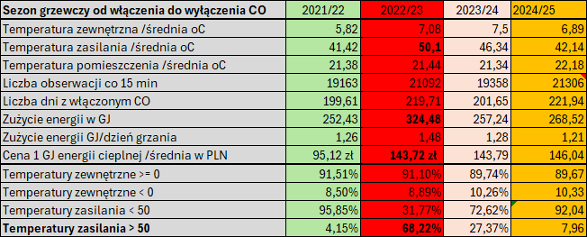

Ogrzewanie budynku
Na oko
Woda w grzejnikach średnio 50 °C, bo ktoś zgłosił, że jest zimno.
Zmierzone
Wystarcza 41–43 °C. W mieszkaniach jest cieplej niż wtedy, a rachunek niższy.
Adam Kaczmarek · Solutor.pl
Idę zobaczyć, jak proces wygląda naprawdę. Mierzę go, buduję narzędzie, które pilnuje go na co dzień, i potem je utrzymuję.
O co chodzi
Trzy miejsca, w których to zobaczyłem i coś z tym zrobiłem.
Ogrzewanie budynku
Na oko
Woda w grzejnikach średnio 50 °C, bo ktoś zgłosił, że jest zimno.
Zmierzone
Wystarcza 41–43 °C. W mieszkaniach jest cieplej niż wtedy, a rachunek niższy.
Rozliczenia wspólnoty
Na oko
Sprawozdanie za jeden rok i uchwała przyjęta w kwadrans.
Zmierzone
Koszty rok do roku: co doszło, co zniknęło, co podrożało i skąd wzięła się dopłata.
Domowa apteczka
Na oko
Zapas leków w pamięci. Recepta traci ważność, zanim ktoś to zauważy.
Zmierzone
Zapas każdego leku odliczany dzień po dniu, z przypomnieniem przed końcem.
Przykłady
Dwa działają publicznie i możesz je otworzyć teraz. Trzecie jest w budowie.
Data Driven Heat Control
podgląd dla gości: kod 0000
Budynek wielorodzinny, 8 lokali, ciepło z sieci miejskiej. Po jednym sezonie właściciele dostali wysokie dopłaty i nikt nie umiał powiedzieć, dlaczego.

Te same dane odpowiadają już na dwa kolejne pytania wspólnoty: czy zamówiona moc cieplna nie jest za wysoka i czy budynek nadaje się pod pompę ciepła.
Zarządzasz budynkiem albo jesteś w zarządzie wspólnoty? W ten sam sposób mogę sprawdzić Wasz węzeł cieplny. Napisz do mnie.
MedOrganizer Pro
Osoba przyjmująca na stałe kilka leków ciągle balansuje między „zapas się kończy” a „recepta traci ważność”. Kartka i pamięć zawodzą, a skutkiem jest przerwa w leczeniu.
Działa publicznie pod własnym adresem. Kopia danych na Dysku Google jest na razie dostępna dla zaproszonych osób.
nazwa robocza: LokalAsystent
Właściciel lokalu dostaje raz w roku sprawozdanie za jeden rok i kwotę „nadpłata” albo „niedopłata”. Bez porównania z poprzednimi latami trudno zobaczyć, co się zmieniło i dlaczego.
Do jednej kartki, z którą właściciel idzie na zebranie: co się zmieniło, skąd wzięła się dopłata i o co warto zapytać przed głosowaniem.
Jak pracuję
Opis procesu i sam proces to często dwie różne rzeczy. Zaczynam od miejsca, w którym praca się odbywa, i od danych, które już są: faktur, arkuszy, odczytów.
Kod powstaje we współpracy z modelami AI. Dzięki temu działający prototyp pojawia się w dni, nie w miesiące, a koszt jest kosztem jednej osoby.
Do mnie należą decyzje: co budujemy, co jest bezpieczne i co trafia do użytkowników. Każdą zmianę sprawdzam, zanim tam trafi.
Narzędzia działają na moich serwerach w Polsce. Codzienna szyfrowana kopia zapasowa z próbą odtworzenia, alarm na telefon, gdy coś przestaje działać, i własne testy bezpieczeństwa.
Ten, który Cię męczy: przepisywanie, arkusz, który rozumie jedna osoba, decyzje „na wyczucie”.
Działający, na Twoich danych. Widzisz efekt, zanim zdecydujesz, co dalej.
Narzędzie trafia do codziennej pracy, na komputer albo telefon, razem z przeszkoleniem ludzi.
Kopie zapasowe, aktualizacje i poprawki. Nie zostajesz z czymś, czego nikt nie umie naprawić.
O mnie
Mój tato był szefem finansów w dużej fabryce maszyn. Kiedyś zauważył w zestawieniu wysokie straty z reklamacji odlewów. Zamiast pytać w biurze, poszedł na odlewnię i poprosił, żeby mu pokazano, jak powstaje odlew.
Pracownik nabrał składnik na czubek łopaty i wsypał go do mieszanki. Potem tą samą łopatą nabrał kolejny.
Słyszałem tę historię wiele razy. Od tamtej pory widzę tę łopatę w różnych miejscach: w węźle cieplnym, w rozliczeniach, w domowej apteczce.
Kontakt
Opisz mi w kilku zdaniach proces, który działa na oko albo zjada czas: ręczne raporty, przepisywanie między arkuszami, rozliczenia, których nikt nie sprawdza. Odpowiem, czy da się to zmierzyć i co mógłbym pokazać w tydzień.
Opisz mi swój procesSzukasz kogoś, kto usprawnia procesy i doprowadza pomysły do działających narzędzi: automatyzacja, wdrożenia, narzędzia wewnętrzne? Porozmawiajmy. CV wysyłam od ręki.
Poproś o CV